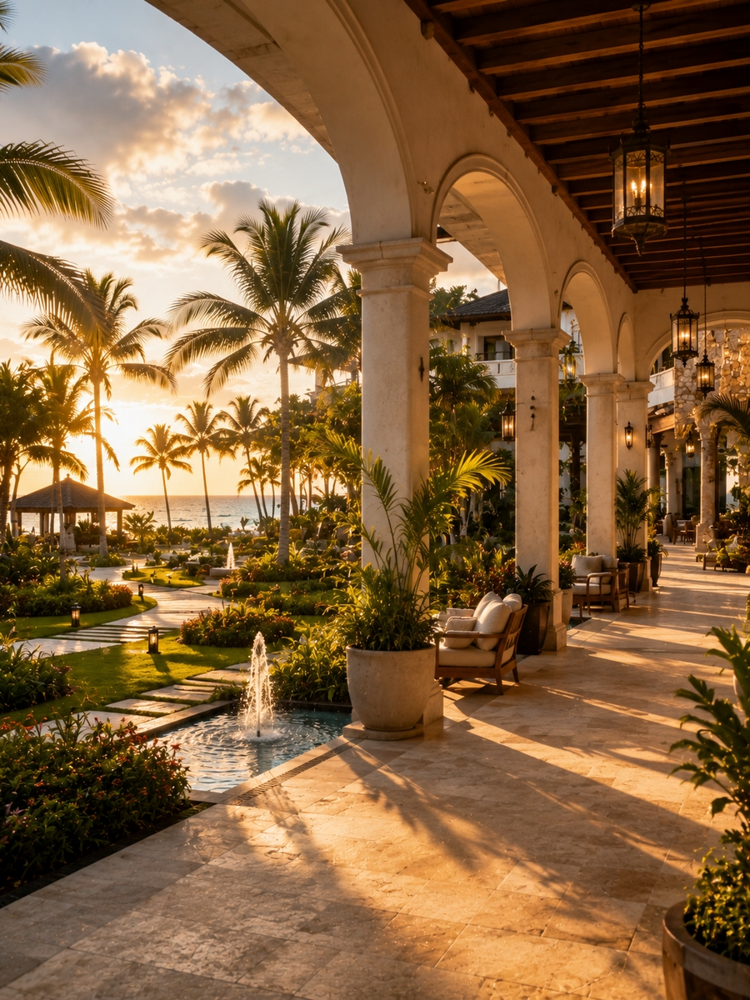
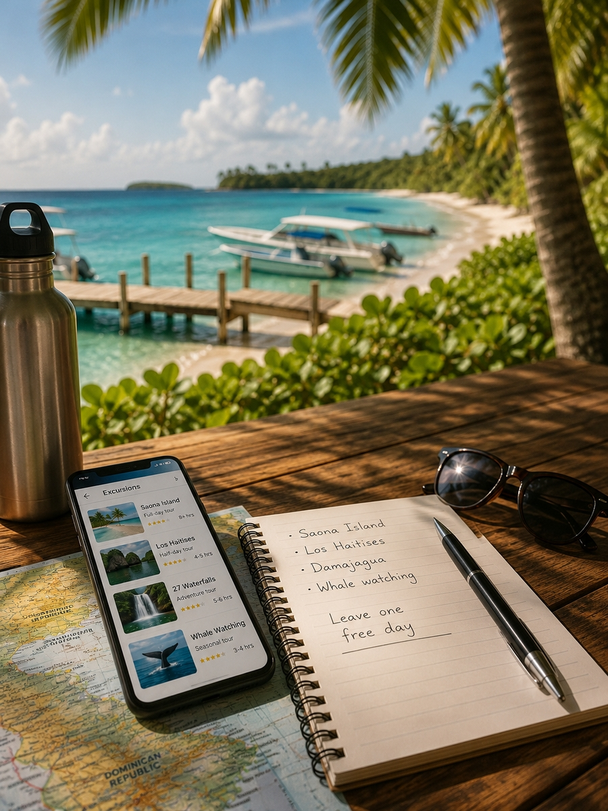

Picking a resort before choosing the right coast
Punta Cana, Bayahibe, Puerto Plata and Samaná use different airports, face different oceans and deliver completely different trips. Choose the region before the hotel.
→ Compare all 5 DR regions
Plan your Dominican Republic trip with confidence. Compare Punta Cana, Bayahibe, La Romana, Puerto Plata and other destinations, then use our hotel, airport, eSIM, budget and travel guides to plan every step.
Editorial note: this hub points you to Travel Radar LK guides first. Some linked article pages may contain affiliate links, clearly marked where relevant.
Choose the planning problem that worries you most, then jump to the guide or next step that fits.
This is a guided shortcut, not a chatbot: pick one travel problem and we'll point you to the right next step.
Select a scenario on the left to see what to read and do first.
Choose the base before the hotel
Punta Cana, Bayahibe and Samaná can look similar from a distance, but they create very different trips once you add transfer time, beach style and hotel format. The area decision should come before the hotel search.
Next step: Compare resort areas first, then search for hotels in your chosen zone.
The hotel choice matters less than choosing the right coast and airport. Each region creates a different trip.
Schematic region map, not exact geography.
Tap a region on the map to see what's best about each area — and what to watch out for before booking.
Sequence matters. Lock the area and hotel first — then stack the supporting services around that decision.



Punta Cana offers endless all-inclusive resorts with direct beach access and simple logistics. Bayahibe and La Romana deliver a quieter, more intimate Caribbean feel with fewer crowds. Puerto Plata and Samaná trade resort convenience for dramatic scenery and a more authentic local experience.
Open the map above first, choose the area, then search hotels filtered to that zone. Don't work backwards from a photo.

Most Punta Cana resorts are 15–30 minutes from PUJ airport, making arrival smooth. Bayahibe and La Romana add 45–70 minutes. Puerto Plata (POP) and Samaná require separate airport routing or a longer overland drive. A long transfer on arrival day after a transatlantic flight changes the trip feel significantly.
Book the transfer after confirming the hotel — not before. The pickup address determines the vehicle and price tier.
An eSIM installed before departure means maps, hotel confirmations and transport apps work from the first minute you land. No airport SIM counter queues. No roaming surprises.
Keep your home SIM active for bank codes and two-factor authentication. Use the eSIM for data only.

A solid policy with $50,000+ medical coverage is the calm baseline. If you're renting a scooter, snorkeling, diving or doing adventure tours, verify that activity coverage is included before you depart — not after an incident.
Keep the policy number and emergency assistance phone number offline — not only in email.

Saona Island, Los Haitises National Park, 27 Waterfalls of Damajagua and whale-watching tours sell out during high season. Check pickup logistics before you book: a 6 am hotel pickup for a full-day Santo Domingo excursion changes the day before it starts.
Choose by group size, pickup point and total day length — not only by photo or price.

Most resort trips enter via Punta Cana International (PUJ). Puerto Plata (POP) and Santo Domingo (SDQ) serve their own regions. Flight prices shift significantly by date — moving two or three days on a flexible calendar can change the fare by more than a hotel night would.
Long US or European connections can make a cheap ticket feel much more expensive. Check total travel time, not just fare.
Each cluster targets a specific decision moment in the planning process.
These six planning errors explain most post-trip regrets across Punta Cana, Bayahibe and the North Coast.
Punta Cana, Bayahibe, Puerto Plata and Samaná use different airports, face different oceans and deliver completely different trips. Choose the region before the hotel.
→ Compare all 5 DR regionsAll three sit in Punta Cana, yet they differ sharply in transfer length, surf strength, resort density and pricing. Matching the strip to your trip matters.
→ Compare Punta Cana areasGlossy resort photos hide sargassum barriers, long walks from distant room blocks and extra taxes or club upgrades. Five quick checks protect your budget.
→ Read the hotel booking checklistA high review score only means previous guests liked what that property offers — it may still be the wrong crowd, noise level or beach setup for your trip.
→ Learn the three-match checkArriving without your free Dominican eTicket QR code, falling for unofficial curb taxis or mistiming a 70-minute transfer can derail your first hours.
→ Plan your PUJ arrivalPunta Cana and Cancun look similar in all-inclusive brochures, but they differ in off-resort day trips, flights, seaweed patterns and overall value.
→ Read Punta Cana vs Cancun